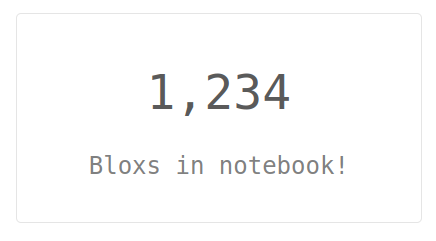
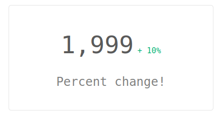
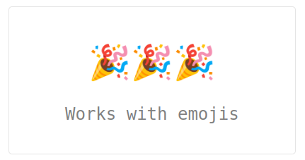
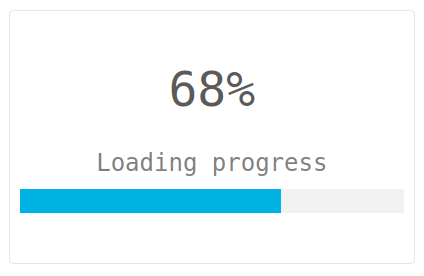
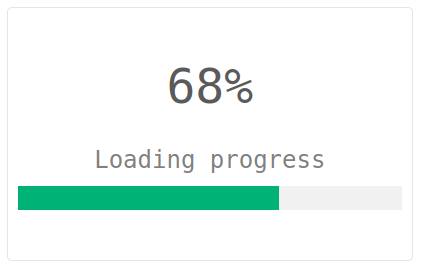
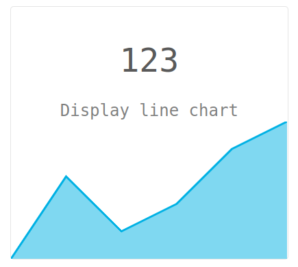
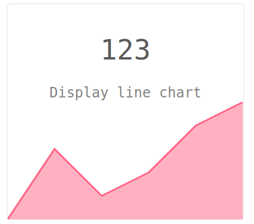
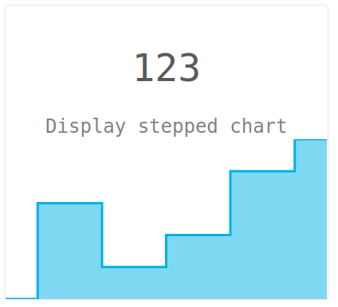
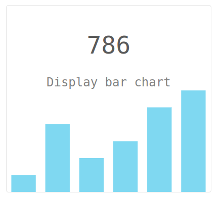
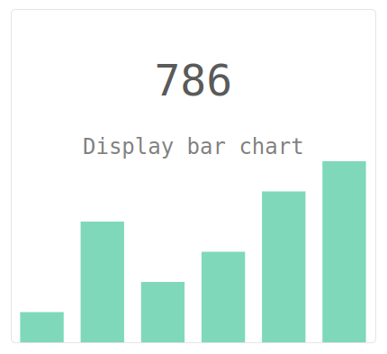

Bloxs是一个简单的 python 可交互的可视化包，可以帮助您以一种有吸引力的方式（以块形式）显示信息。 非常适合在笔记本中构建仪表板、报告和应用程序。
它适用于：Jupyter Notebook、Google Colab、Deepnote、Kaggle Notebook、Mercury。
安装
pip3 install bloxs
快速上手
from bloxs import B
B(1234, "Bloxs in notebook!")
案例
| Bloxs | Code |
|---|---|
|  | B(1234, "Bloxs in notebook!") |
|  | B(1999, "Percent change!", percent_change=10) |
|  | B("🎉🎉🎉", "Works with emojis") |
|  | B("68%", "Loading progress", progress=68) |
|  | B("68%", "Loading progress", progress=68, color="green") 颜色color参数可以设为"blue", “red”, “green” 或十六进制表示 (例如"#fa33fa") |
|  | B("123", "Display line chart", points=[1,4,2,3,5,6]) |
|  | B("123", "Display line chart", points=[1,4,2,3,5,6], color="red") |
|  | B("123", "Display stepped chart", points=[1,4,2,3,5,6], chart_type="stepped") |
|  | B("123", "Display bar chart", points=[1,4,2,3,5,6], chart_type="bar") |
|  | B("123", "Display bar chart", points=[1,4,2,3,5,6], chart_type="bar", color="green") |
可以在一行内整合多个图
B([
B(1999, "Percent change!", percent_change=10),
B("🎉🎉🎉", "Works with emojis"),
B("68%", "Loading progress", progress=68),
B(1234, "Bloxs in notebook!")
])
B([
B("786", "Display bar chart", points=[1,4,2,3,5,6], chart_type="bar", color="green"),
B("123", "Display line chart", points=[1,4,2,3,5,6], color="red"),
B("123", "Display stepped chart", points=[1,4,2,3,5,6], chart_type="stepped")
])
如果想在自己电脑中实验上述代码，可以点击 notebook 下载。
结合Mercury用Bloxs
Mercury 是一个用于将笔记本转换为交互式网络应用程序的框架。 它基于 YAML 配置将小部件添加到笔记本中。 下面展示了一个带有 bloxs 的笔记本，以及作为 Mercury 的 Web 应用程序的同一笔记本。